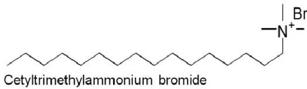

✨Traditionally, \(\beta-Ni(OH)_2\) synthesis requires hydrothermal conditions at elevated temperatures (120-180 \(^\circ\)C).
However, room temperature synthesis methods offer advantages including lower energy consumption, simplified equipment requirements, and better control over morphology through surfactant-mediated growth.
\(\beta-Ni(OH)_2\) nanostructures have diverse applications including rechargeable batteries (Ni-MH, Ni-Cd), supercapacitors, electrocatalysis for oxygen evolution reaction (OER), electrochromic devices, and chemical sensors for glucose and heavy metal detection.
The room temperature synthesis approach is particularly attractive for scalable production with reduced energy costs.
Room temperature solution-phase method utilizing CTAB (cetyltrimethylammonium bromide) as a cationic surfactant to direct the growth of \(\beta-Ni(OH)_2\) nanostructures.
CTAB micelles act as soft templates, controlling nucleation and growth processes to produce well-defined nanostructures with high surface area.
The surfactant-assisted precipitation method allows for morphology control, producing nanoneedles, nanosheets, or nanoflakes depending on reaction conditions.

Experimental Procedure
- 0.237 g of \(NiCl_2 \cdot 6H_2O\) was dissolved in 7.5 ml of a 4.5 mM Cetyltrimethylammonium bromide (CTAB) solution.
- 30 ml of 0.25 M \(NH_4OH\) solution was incrementally added to the \(NiCl_2\) solution, followed by the gradual addition of 6 ml of 0.5 M \(NaOH\) solution to the aforementioned mixture, all while maintaining continuous stirring.
- The green precipitates were gathered, rinsed with distilled water, and subsequently dried in a vacuum oven at 80 \(^\circ\)C for 12 hrs.
✦ Nickel Salt Dissolution
✦
\(NiCl_2 \cdot 6H_2O\)
\(\rightarrow\)
\(Na^{2+}\)
\(+\)
\(2Cl^-\)
\(+\)
\(6H_2O\)
✦ Complex Formation with Ammonia
✦
\(Na^{2+}\)
\(+\)
\(NH_3\)
\(\rightarrow\)
\([Ni(NH_3)6]^{+2}\)
✦ Hydroxide Precipitation
✦
\(\beta-Ni(OH)_2\)
\(+\)
\(2OH^-\)
\(\rightarrow\)
\(2OH^-\)
\(+\)
\(NH_3\)
Lab Questions and Answers
What are the two main polymorphs of nickel hydroxide and how do they differ structurally?
The two main polymorphs of nickel hydroxide are \(\alpha-Ni(OH)_2\) and \(\beta-Ni(OH)_2\).
Structurally, \(\beta-Ni(OH)_2\) consists of well-ordered, stacked hexagonal brucite-like layers with no intercalated water or anions, resulting in a turbostratic structure with disordered layers and a larger interlayer spacing (approximately 7-8 \(\mathring{A}\)).
This structural difference makes \(\alpha-Ni(OH)_2\) more reactive and a better precursor for battery electrodes, though it is less stable and tends to transform into the β phase in strongly alkaline conditions.
Why is CTAB used in this synthesis and what role does it play?
CTAB acts as a structure-directing agent and surfactant.
It helps stabilize the \(\alpha\)-phase of nickel hydroxide by preventing particle agglomeration and controlling morphology.
What is the role of CTAB micelles in controlling the morphology of \(\beta-Ni(OH)_2\) nanostructures?
In the synthesis of \(\beta-Ni(OH)_2\), CTAB micelles act as soft templates that direct particle growth into specific shapes (e.g., nanorods, nanosheets, or flower-like structures).
The micelles provide confined reaction spaces and selectively bind to certain crystal faces, slowing growth in those directions and promoting anisotropic morphologies.
How can you distinguish between \(\alpha-Ni(OH)_2\) and \(\beta-Ni(OH)_2\) using XRD? What are the key diffraction peaks for \(\beta\)-phase?
\(\alpha-Ni(OH)_2\) shows a broad, low-angle (001) peak around \(2\theta = 10-12^\circ\) (d-spacing ~7-8 \(\mathring{A}\)) due to its larger, disordered interlayer containing water and anions.
\(\beta-Ni(OH)_2\) shows a sharp, higher-angle (001) peak around \(2\theta = 19-20^\circ\) (d-spacing ~4.6 \(\mathring{A}\)) corresponding to its compact, ordered brucite-like structure.
Compare room temperature synthesis with hydrothermal synthesis. What are the advantages and disadvantages?
Room temperature synthesis is simple, fast, and energy-efficient but often yields poorly crystalline or impure products.
Hydrothermal synthesis produces highly crystalline, phase-pure materials with controlled morphology but requires special equipment, higher energy, and longer reaction times.